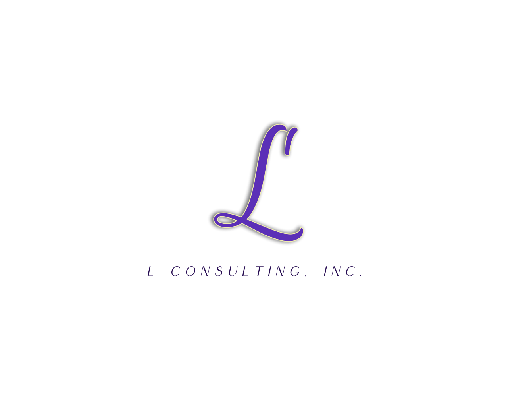

相馬 弘明
SOMA HIROAKI
Scroll
Career Path
2016
─
2020
京都大学
経済学部 経済経営学科
2017 - 2018
シンガポール国立大学（NUS）に交換留学
2020
─
2021
A.T.Kearney
経営コンサルタント
米系戦略コンサルに新卒入社。
製造・ヘルスケアなど複数業界にて、
売上5,000億円超の顧客の案件に従事
2021
─
2024
株式会社ブリーチ
執行役員 経営戦略部長
100名超企業にて、経営計画の策定、および人事/マーケ/営業/システムなど多領域を管掌。
東証グロース上場も達成。
Current
2024
─
現在
エル・コンサルティング株式会社
代表取締役
独立し、AIネイティブな次世代型コンサルティングファームとして設立。
Current
2025
─
現在
一般社団法人NEO商工協会
代表理事
令和の経営課題に対応する経営者団体「NEO商工」を設立・運営。
Swipe

エル・コンサルティング株式会社
L CONSULTING INC.
上場企業から中小企業まで、
「AI経営」実現に強みを持つコンサルティングを提供。
01
経営コンサルティング
"外部経営企画" として伴走
02
AI実装 / Claude Code 導入
業務に組み込まれるAIを設計・実装
03
AI人材育成 / 組織開発
使いこなせる組織をつくる

一般社団法人NEO商工協会
NEO COMMERCE ASSOCIATION
AI活用・Web集客から資金・人材・承継まで──
令和で直面する中小企業課題は、
10年前には存在しなかったものばかり。
激変の時代に必要な術と仲間を得る経営者団体
「NEO商工」を運営しています。